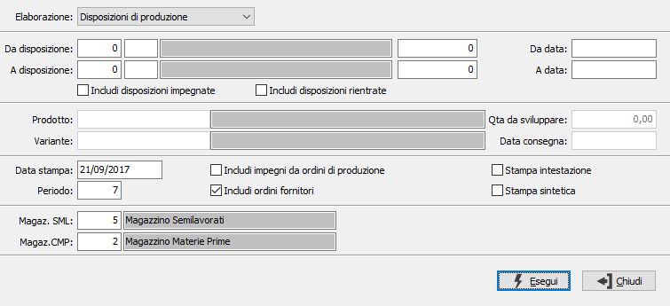

Calcolo fabbisogni futuri
La procedura consente di produrre dei report relativi ai fabbisogni futuri di una disposizione o simulare il fabbisogno di un singolo prodotto.

ELABORAZIONE: definisce se effettuare l'analisi partendo dalle disposizioni oppure in relazione ad un singolo prodotto (che abbia una propria distinta base).
Elaborazione su Disposizioni di produzione
DA DISPOSIZIONE: tre campi per contenere rispettivamente anno, causale e numero della disposizione da cui si vuole iniziare la selezione. Confermando a vuoto, la selezione inizia dalla prima disposizione compatibile con i successivi parametri.
A DISPOSIZIONE: tre campi per contenere rispettivamente anno, causale e numero della disposizione con cui si vuole concludere la selezione. Confermando a vuoto, la selezione termina con l’ultima disposizione compatibile con i successivi parametri.
DA DATA: data disposizione da cui si vuole iniziare la selezione. Confermando a vuoto, la selezione inizia dalla prima data valida.
A DATA: data disposizione con cui si vuole concludere la selezione. Confermando a vuoto, la selezione termina con l'ultima data valida.
INCLUDI DISPOSIZIONI IMPEGNATE: definisce se considerare anche le disposizioni che sono già impegnate (casella con segno di spunta).
INCLUDI DISPOSIZIONI RIENTRATE: definisce se considerare anche le disposizioni che sono già rientrate (casella con segno di spunta).
Elaborazione su Singolo prodotto
PRODOTTO: codice dell'articolo, presente in anagrafica Prodotti, per cui si desidera effettuare l'elaborazione. Sul campo è attiva la ricerca (F9) sull’anagrafica prodotti.
QUANTITÀ DA SVILUPPARE: quantità del prodotto per cui si vogliono effettuare le simulazioni di produzione.
DATA CONSEGNA: Indica la data in cui si presume di consegnare tale prodotto. Cambiando valore a questo campo possiamo simulare nel futuro i fabbisogni.
Opzioni generali
DATA STAMPA: data in cui viene effettuata la stampa, viene proposta la data di sistema.
PERIODO: Indica il numero di giorni di cui è lungo un periodo, il programma gestisce 4 periodi e le quantità oltre tali periodi.
INCLUDI IMPEGNI DA ORDINI DI PRODUZIONE: Determina se nella selezione si deve tener conto degli impegni a produzione del componente.
DISPONIBILITÀ ORDINI FORNITORI: determina l'aggiunta al calcolo del fabbisogno, dell'ordinato derivante dagli ordini fornitori (casella con segno di spunta). Viene proposto quanto come indicato nella configurazione produzione.
STAMPA INTESTAZIONE: indica se deve essere stampata come prima pagina del report una pagina contenente tutte le informazioni inerenti i criteri di selezione specificati per il report stesso (casella con segno di spunta).
STAMPA SINTETICA: Indica se si desidera stampare il report dei fabbisogni futuri in formato sintetico.
MAGAZZINO SEMILAVORATI: codice del magazzino da utilizzare per i progressivi dei semilavorati. Sul campo sono attive le funzioni di ricerca (F9) sulla tabella magazzini. Viene proposto, se attiva la gestione, quello riportato in configurazione produzione.
MAGAZZINO COMPONENTI: codice del magazzino da utilizzare per i progressivi delle materie prime. Sul campo sono attive le funzioni di ricerca (F9) sulla tabella magazzini. Viene proposto quello riportato in configurazione produzione.